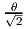
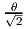
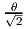

Assume rb≠0, S and X are positive definite diagonal matrices, and A is m×n with rank m. Show that ΔxT Δs≠0.
 2(θ) and -∞(1 -) are identical, for any
θ ∈ (0, 1). (See page 84 in Wright for a definition of these neighborhoods.)
2(θ) and -∞(1 -) are identical, for any
θ ∈ (0, 1). (See page 84 in Wright for a definition of these neighborhoods.)
MATP6640/ISYE6770 Linear Programming, Homework 6.
Due: Friday, April 20, 2018.
10% penalty for each day late.
Assume rb≠0, S and X are positive definite diagonal matrices, and A is m×n with rank m. Show that ΔxT Δs≠0.
2(θ) and -∞(1 -) are identical, for any
θ ∈ (0, 1). (See page 84 in Wright for a definition of these neighborhoods.)
| John Mitchell |
| Amos Eaton 325 |
| x6915. |
| mitchj at rpi dot edu |
| Office hours: Tuesday: 12–2pm, Wednesday: 11am–1pm. |